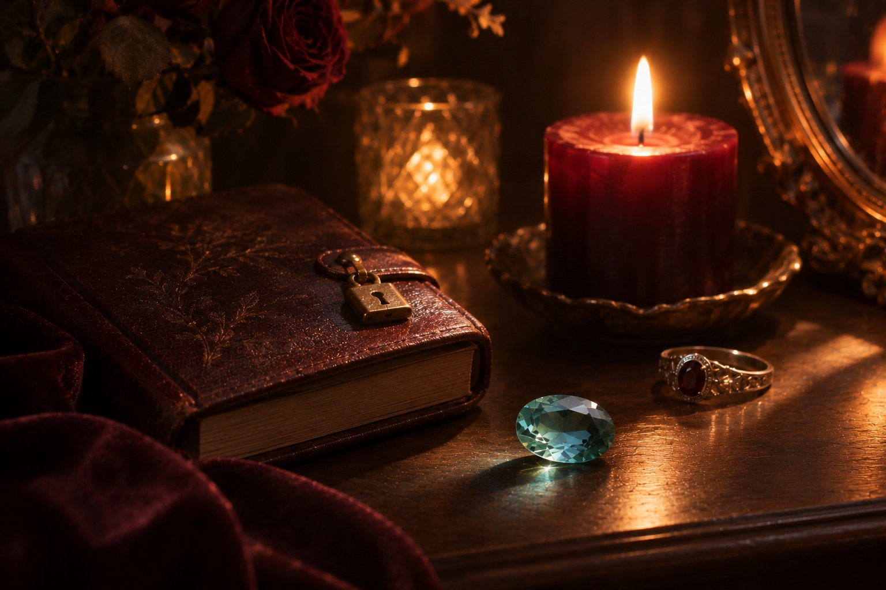
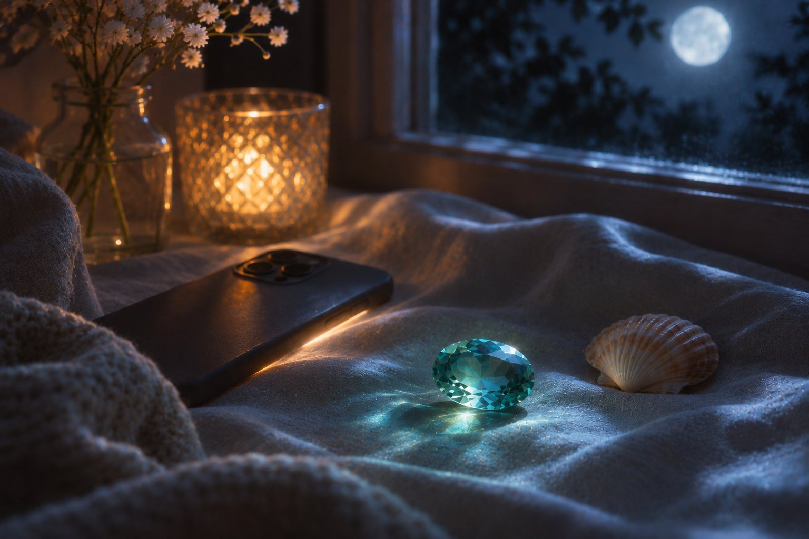

You can figure out someone's entire romantic situation from three screenshots, yet nobody has the slightest idea who you have a crush on. Everyone thinks you're mysterious. You just find certain things more interesting when they're kept secret. Scorpio (October 23 to November 21) has a birthstone called beryl, whose cool sea blue-green reveals something unexpected.

The Scorpio everyone knows
Why Does Everyone Think Scorpio Is So Mysterious?
You're the girl who listens to an entire conversation before saying the one thing nobody else has noticed.
You can spot a fake apology, remember suspicious little details, and tell when two people secretly like each other.
Your friends sometimes wonder whether you can read minds.
Meanwhile, you've managed to spend an entire afternoon discussing everyone else's love life without revealing a single detail about your own.
There's something fascinating about how you know so much about everyone, while they still wonder how well they really know you.
The Scorpio nobody sees
What Are You Hiding Behind Those Quiet Eyes?
You secretly love the idea of being completely understood without having to explain yourself.
You remember the smallest acts of kindness. Someone lending you their jacket might occupy your thoughts for an unreasonable number of days.
You want to trust someone enough to tell them the things you've never written in your journal.
In George Kunz's 1913 book The Curious Lore of Precious Stones, Scorpio's stone is beryl.
Its cool sea blue-green mirrors your private longing for something gentle and honest.
There's an unexpectedly soft little world inside you.
Behind the mysterious expression
Why Is Scorpio So Difficult to Read?
Someone asks why you're looking at them like that.
You were actually wondering what to have for dinner.
Apparently, even your resting expression has a mysterious backstory.
People sometimes mistake your silence for judgment. Most of the time, you're simply deciding how much of yourself you're comfortable sharing.
When somebody disappoints you, you might become quieter rather than explain exactly how much it hurt.
Your feelings run considerably deeper than your conversations suggest.
People find your secrets fascinating. What they rarely understand is how much sharing those secrets would mean to you.
Somewhere beneath the ocean
What Would It Feel Like to Share Every Secret?
It's 2 a.m. You're listening to a song that reminds you of someone you've never admitted missing.
You open an old conversation, read a few messages, and wonder whether that person remembers them too.
Then you imagine telling someone absolutely everything and having them stay exactly where they are.
No awkward silence. No strange looks. Just a little smile.
Maybe sea blue-green is the color of that quiet, beautiful possibility.
Beneath all those carefully kept secrets, you want someone to know every little thing about you.

When your sea-blue side wants out, Gemflow turns sapphire into slow-moving light on your phone, so you can watch your inner color for once.
Beryl is the Scorpio birthstone, a cool sea blue-green that mirrors the secret tenderness hidden inside you.